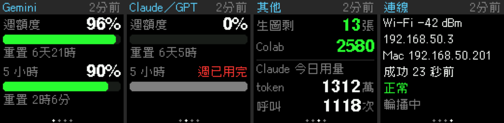
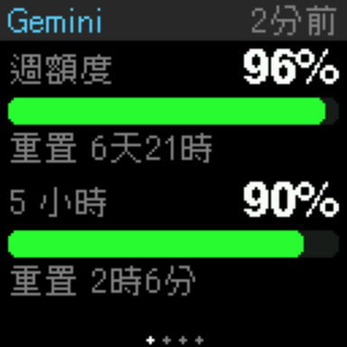
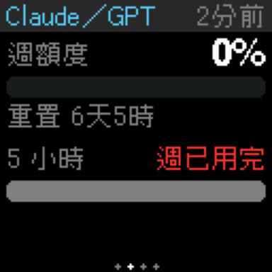
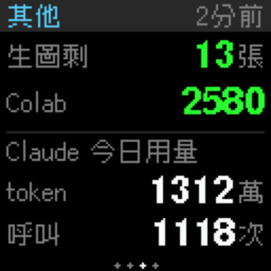
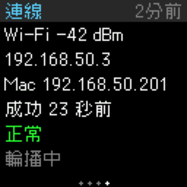

FAIL-01
實體螢幕出現直條紋、下半部沒畫完
- 嘗試
- 第一版先用 T-Display S3（170×320）開發，看到實體螢幕出現直條紋且下半部沒畫完，懷疑是 PSRAM 經並列匯流排 DMA 送畫面時出錯，改了兩次程式。
- 失敗
- 改程式之後畫面仍然不正常（其中一次還變成全黑，見 FAIL-02）。
- 改用
- 拿起板子仔細看，才發現是螢幕本身破了，換成 T-QT Pro。
- 學到
- 截圖正常、實體螢幕異常時，先檢查硬體再改程式。
用一塊拇指大小的 LILYGO T-QT Pro 開發板放在桌上，透過家裡 Wi-Fi 向自己的電腦讀取 AI 工具剩餘額度與用量，四個頁面自動輪播，不必一直切視窗確認。
這台額度顯示器以 LILYGO T-QT Pro 為核心，插上 USB-C 供電就能放在螢幕下方。板子每 60 秒向自己電腦上的資料服務請求一次最新狀態，四個資訊頁每 8 秒自動輪播一次。





整個系統刻意把「去哪裡查資料」留在電腦端處理，開發板只做一件事：透過家裡 Wi-Fi 向電腦取回整理好的單一 JSON 檔，然後畫在 128×128 螢幕上。
ARCHITECTURE // Mac 資料彙整 → 區網 HTTP :8817/meter.json → T-QT Pro
server/meter_server.py）：只使用 Python 標準函式庫，開啟 HTTP 埠 8817，並且只回應區網與本機連線，整理成 /meter.json 提供讀取。
quota_cache.json（由選單列小工具每 5 分鐘更新一次）。資料服務刻意不自己呼叫 agy 指令，避免在斷網或登入失效時反覆刷新權杖，把原本的登入狀態弄壞。
準備硬體與 Arduino 開發環境
準備一片 LILYGO T-QT Pro 與一條能傳資料的 USB-C 線（純充電線無法燒錄）。電腦端安裝 Arduino IDE 或 arduino-cli，接著安裝 ESP32 開發板套件 3.3 版，並裝好兩個函式庫：LovyanGFX、ArduinoJson。
建立設定檔 secrets.h
複製範本 firmware/token_meter/secrets.example.h 成同一資料夾下的 secrets.h，填入家裡 Wi-Fi 名稱與密碼、OTA 更新密碼、電腦的區網名稱以及備用 IP。記得不要把 secrets.h 放上 GitHub。
在 macOS 終端機可以用以下指令查電腦的區網名稱：
scutil --get LocalHostName設定編譯參數（FQBN）
這塊板子內建 4MB Flash 與 2MB PSRAM，使用 arduino-cli 編譯時請指定完整 FQBN（分區選用 min_spiffs）：
esp32:esp32:esp32s3:CDCOnBoot=cdc,USBMode=hwcdc,FlashSize=4M,PSRAM=enabled,PartitionScheme=min_spiffs第一次用 USB 燒錄韌體
首次燒錄必須透過 USB 線：先先拔掉 USB 線，按住左鍵（BOOT／IO0）不放再插上 USB 線，插好後放開，讓板子進入燒錄模式。燒錄完成後板子會停在下載模式，可用 esptool ... --after watchdog-reset 指令讓它重開，或把 USB 線拔掉重插讓它開機（T-QT Pro 沒有 RST 鍵）。
啟動電腦端資料服務
在電腦執行資料服務程式：
python3 server/meter_server.py
接著在瀏覽器打開 http://localhost:8817/meter.json，確認能正常看到輸出的 JSON 資料。確認無誤後，若希望開機常駐背景執行，可利用 macOS 的 launchd 設定。
修改畫面文字後，重產中文字型子集
板子 Flash 空間有限，韌體裡只包入畫面上真正用到的中文字元。只要改過 token_meter.ino 裡的中文顯示文字，就執行工具腳本重新產生 cubic11_meter.h（字級設為 12 px 才會剛好對齊點陣像素格）：
python3 tools/make_u8g2_font.py --ttf tools/Cubic_11.ttf --size 12 --chars-from firmware/token_meter/token_meter.ino --name u8g2_font_cubic11_meter --out firmware/token_meter/cubic11_meter.h之後改程式不必插線：兩種 OTA 無線更新
首次 USB 燒錄完成後，往後修改韌體可用 Wi-Fi 進行 OTA 更新，兩種方式都需要填入你在 secrets.h 設定的 OTA 密碼：
espota）：偶爾若遇到 Broken pipe 中斷，重新執行一次即可。
python3 espota.py -i <板子IP> -p 3232 -a <OTA密碼> -f token_meter.ino.bin/update）：打開 http://token-meter.local/update，帳號填 admin，密碼填 OTA 密碼，檔案請選 token_meter.ino.bin（注意不要選成 merged.bin）上傳。
驗收畫面
在瀏覽器打開 http://token-meter.local/screen.bmp?page=0（頁碼可換成 0～3），就能直接取回板子目前的畫面截圖，不必拿手機對著小螢幕拍照。
screen.bmp 抓回來的是記憶體裡的畫面緩衝區內容，送完之後實體螢幕還是要親眼看一次，確認顯示沒有異常。
實作過程不像步驟清單那樣一路順暢，以下保留每一條實際踩過的失敗路徑（嘗試 → 失敗 → 改用 → 學到），碰到類似狀況時可以少走冤枉路。
// … 後面的 createSprite() 也一起被註解掉。.ino 檔裡。.ino 中結構定義之前，導致編譯報錯 'Bucket' does not name a type。meter_types.h 再引入。.ino 裡的函式參數或回傳值用到自訂結構時，將型別獨立放到 .h 檔最穩。256KB，少數一直讀不到的區塊改加 --no-stub，最後再用 verify-flash 比對整份內容是否一致。8790 與 8795 埠。lsof 查出空著沒人用的埠，改綁 8817。lsof 確認埠號沒有被其他常駐程式占用。以下為本教學對應的儲存庫檔案相對路徑，可直接點擊瀏覽或下載：
| 檔案路徑 | 用途說明 |
|---|---|
| firmware/token_meter/token_meter.ino | T-QT Pro 韌體主程式（畫面繪製、輪播、按鍵與 HTTP 取資料） |
| firmware/token_meter/meter_types.h | 獨立定義資料結構，避開 Arduino 自動產生函式宣告造成的型別順序問題 |
| firmware/token_meter/cubic11_meter.h | 由腳本抽取出來的 U8g2 中文字型子集標頭檔 |
| firmware/token_meter/secrets.example.h | Wi-Fi、OTA 密碼與電腦主機名稱設定範本（請複製為 secrets.h 使用） |
| server/meter_server.py | 電腦端資料服務（Python 標準函式庫，埠 8817，輸出 /meter.json） |
| tools/make_u8g2_font.py | 將 TTF 字型依程式內實際使用的字元轉成 U8g2 點陣字型子集的工具 |
| tools/Cubic_11.ttf | 俐方體11號 Cubic 11 點陣風格繁體中文字型檔 |
| tools/Cubic_11_OFL.txt | 俐方體11號 Cubic 11 的 SIL Open Font License 1.1 授權全文 |